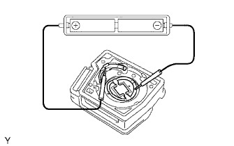

DOOR CONTROL TRANSMITTER MODULE > INSPECTION |
| 1. INSPECT DOOR CONTROL TRANSMITTER MODULE SUB-ASSEMBLY |
Inspect the operation of the transmitter.
Remove the battery (lithium battery) from the transmitter (Click here).
|  |
Install a new or normal battery (lithium battery).
In a location that is approximately 1 m (3.28 ft.) away from the driver side outside door handle, point the key plate of the transmitter at the vehicle and check the operation of the transmitter by pressing the transmission switches on the transmitter body.